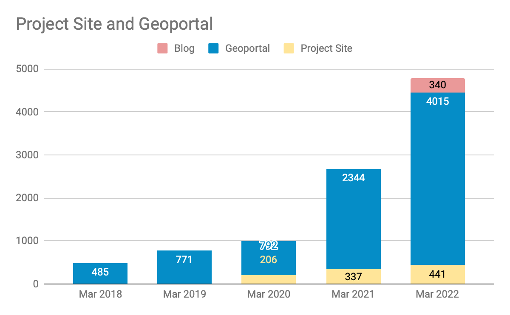

Big Ten Academic Alliance Geospatial Information Network
Project Update: March 2022
Table of Contents


Project Highlight: Revealing each resource’s language

Last year\, the Diverse Collections Working Group assessed the diversity of our collections using a number of different metrics. One effort was around the topic of Language .
Language has long been an optional field in the GeoBlacklight metadata schema\, but was not being displayed in the interface anywhere. The Working Group recommended that the project ensure a language was assigned to each resource and to display it as a browseable facet.
The Metadata Committee held a sprint that included attention on filling in missing language values. The Interface Committee determined if and where to place the facet. Finally\, the Project Manager worked with the Application Developer to implement this change. Since the Language field uses a nonliteral 3-letter code\, we added a translation file to derive a plain text value that is displayed in the facet.
Although the vast majority of the resources are in English\, this facet reveals the maps that are not. More than one project team member commented that using the facet brings a sense of fun to the discovery process.

Statistics: Item Records
Total Item Records
48\,500
March 2022 actions
New records (681)
Retired (542)


Statistics: Geoportal & Blog Users
Geoportal and Project Site users for the months of March (2018-2022)


Statistics: Top Pages
| Top Viewed Parent Pages | Top Viewed Item Pages | Top Downloaded Items (404 total) |
|---|---|---|
| Wisconsin Historic Aerial Imagery Finder (Aerial Photos 1937-41) (332) Sanborn Maps: Pennsylvania, 1884-1938 (126) Digital Sanborn Maps (Black & White): All States, 1867-1970 (90) |
Current Tax Sale List: City of Baltimore, Maryland (232) Aerial Photography [Milwaukee County, Wisconsin] {1937} (84) Research Guide to Restricted or Licensed Data (75) Digital Sanborn Maps (Black & White): California (74) Michigan (71) New Jersey (69) |
Historic County Boundaries and Total Population: United States, 1860 (22) Indiana Roads from INDOT and TIGER Files (17) + LiDAR 2015 - DEM 6ft: Allegheny County/Pittsburgh, Pennsylvania (15) + |
+ New to top pages

Tech Roadmap: Q2 2022
Recently Completed
Upgraded GeoBlacklight Version 4.0 Release Candidate 1
Fixed performance bug - now running quickly
Implemented enhancements requested from committees- new Language facet\, improved Citation widget\, synonym search bug
To Do
Enable multiple downloads
Integrate administrative Rake tools (Broken link reports\, thumbnail harvests) into GEOMG
Incorporate asset storage (XML files\, thumbnails) into GEOMG

Activities: Committees
Metadata Committee
Developing a plan to normalize the Creator value in metadata
Gathering resources on how to cite maps
Planning to look at facets next
Collection Development (CD) & Education Outreach (EO) Committee
Two subprojects to be discussed at April meeting: 1) Cross-checking important farmlands spreadsheets (and gathering other help guide info about this series)\, 2) Gathering feedback from colleagues about Global Census Archive.
Planning an early Summer sprint for identifying new collections
Reviewing/revising collection development policy
Communications Committee
Renewing the invitation for student workers to help migrate blog posts
Devising a Twitter schedule of themed content
Interface Committee
Planning for a June sprint that looks at accessibility
Collections & Education joined the March meeting

Activities: Working Groups
Land Acknowledgement Working Group
Divided and read chapters from Digital Mapping and Indigenous America
Will be making a list of data/map resources mentioned and concepts to follow-up on
Reading critiques and guides to land acknowledgements

April
Start ingesting Important Farmland maps\, a new collection goal
Publish and host sample web services to use for GeoBlacklight/Geoportal testing
May
Blog post sprint